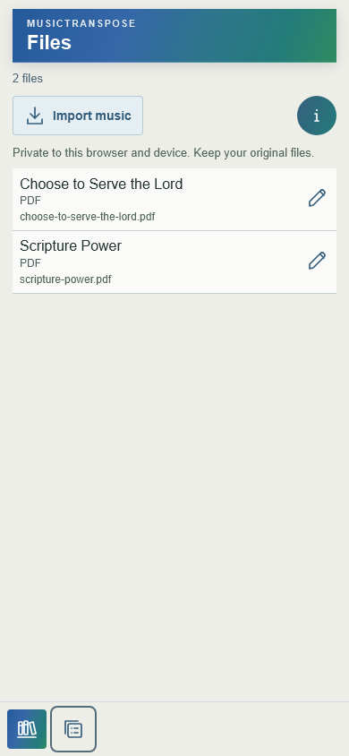
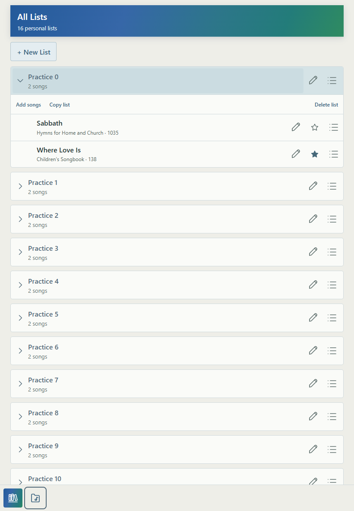
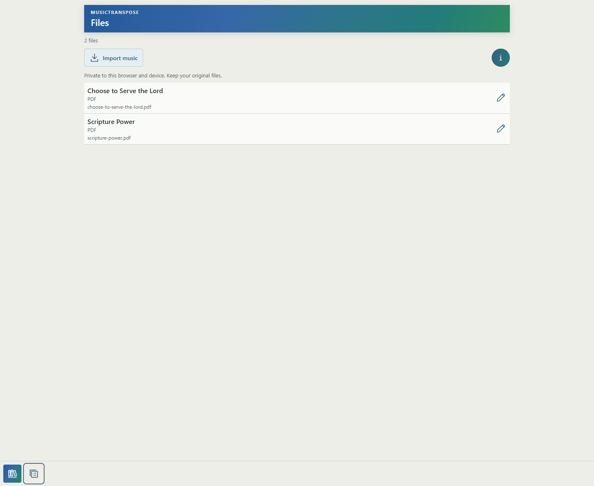

Files ↔ Lists quick links
2026-10-04. Baseline: 95717c6, completed and deployed Score polish.
- Lists footer: Library Home, then Files. Files footer: Library Home, then Lists. Both destinations are icon-only, with matching aria-label/title and aria-controls.
- Reuses filesIcon/listsIcon directly from icons.js. Neutral light surface, blue-gray 24px / 1.7px stroke artwork, subtle border, hover/pressed tint, visible keyboard focus. Existing gradient Library Home artwork is unchanged.
- 44×44px controls, 8px gap, bottom-left grouping. Existing workspace-return padding and home-indicator safe area retained; no separate footer or Score viewport changes.
- Direct handlers reuse showFiles/showLists and existing view history. Lists → Files → Lists preserved the expanded List and 300px scroll position, descriptions, aliases, List order and song order. Files rows remained identical across round trips. Saved Library/List data remained byte-identical.
- Browser Back/Forward passed without a Library detour or blank view. Destination headings receive focus. Enter/Space and both Library Home buttons passed.
- WebKit checks: 390 and 430px. Chromium/Edge checks: 820, 1024 and 1440px. No horizontal overflow; both controls fully visible. Simulated 34px bottom safe padding passed; final Lists content scrolls above the footer.
- Tests: node tests/workspace-quick-links.mjs; node --check library.js; git diff --check. No Score, harmony or broad application suites.
- Changed product files: library.js, styles.css, sw.js (v222). Added tests/workspace-quick-links.mjs and this report/evidence. Existing diagnostic files left untouched.
- Commit/deployment details are in the completion message. Physical iPhone/iPad confirmation of home-indicator clearance remains useful; browser simulation does not establish physical Safari behavior.
Measured geometry and test results
Phone

iPad

Desktop
